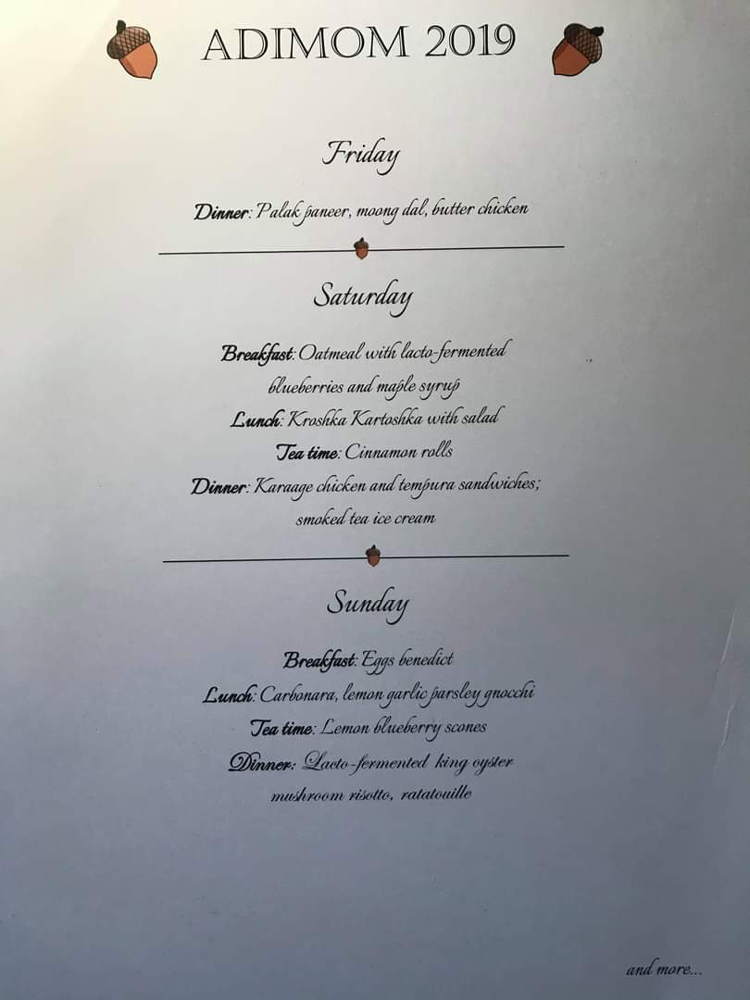
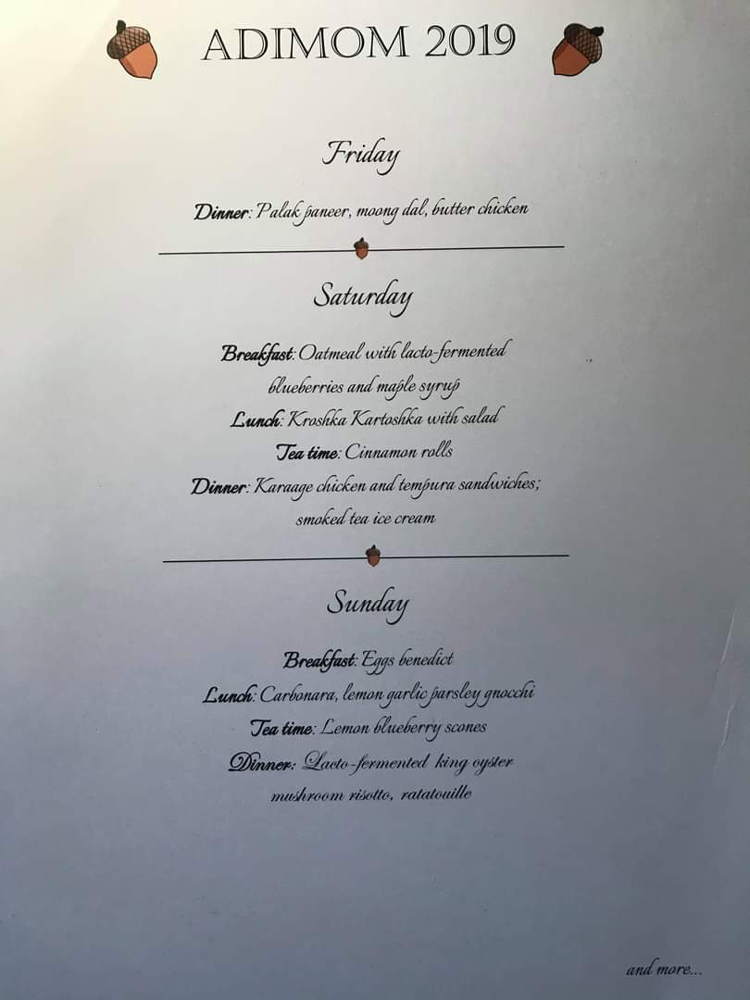

I am quiet quitting Twitter. I will slowly move some of my threads here.
Dear #MathTwitter,
You should know about #Adimom. Here is a thread. (1/9)
In 2015, I lived alone in a studio apartment as a graduate student in the lovely Little Italy neighborhood of Toronto. I had a whiteboard in my room and when I invited people over, we talked math on it casually, with some wine and food. (2/9)
Then it became a thing that we do on weekends. Invite people over, cook together, drink wine and listen to someone talk about whatever they want without an official time limit. I called them homemade seminars back then. (3/9)
Later, Larissa (my now wife) received an invitation to spend a year in University of Geneva and I moved in with roommates Benjamin Briggs, Leonid Monin, Jeffrey Im and Max Klambauer (later replaced by Ivan Telpukhovskiy) all math PhD students from Toronto. (4/9)
We had a dedicated seminar room in the house which was really just the tiny living area that we had. We cooked beautiful food, drank lots of wine and vodka, danced and talked math with people. (5/9)
We lived on Adelaide Street at that time so we named the house Adelaide Institute of Mediocre and Outstanding Mathematics. We were mediocre at best and we loved AdIMOM. (We changed the name Adelaide Institute later after learning about the one in Australia) (6/9)
AdIMOM was lucky because we had graduate students and postdocs who visited Fields Institute, Perimeter Institute and U of T every month. We never had trouble finding speakers. Some of them talked 45 minutes and some for 6 hours. (7/9)
We also organized homemade conferences every spring starting with the First Traditional International Conference for Friends of AdIMOM. We hosted people in our own rooms, had breakfast, lunch, dinner, excursions together for an entire weekend. (8/9)
I moved out and married Larissa, Max took a year to sail somewhere with his rich friend, Ben graduated, then Leonid and I graduated and now Jeff and Vanya are graduating and younger graduate students keep moving in and they continue homemade seminars. Online! (9/9)
New. After I graduated, Stefan Dawydiak took care of the website. It had its own domain adimom.xyz but it is not working anymore. I moved the latest version of the website here.


 
